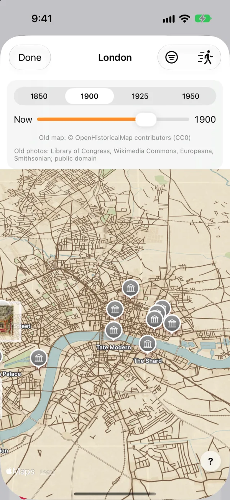
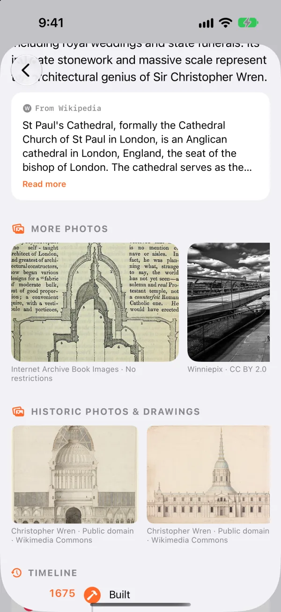
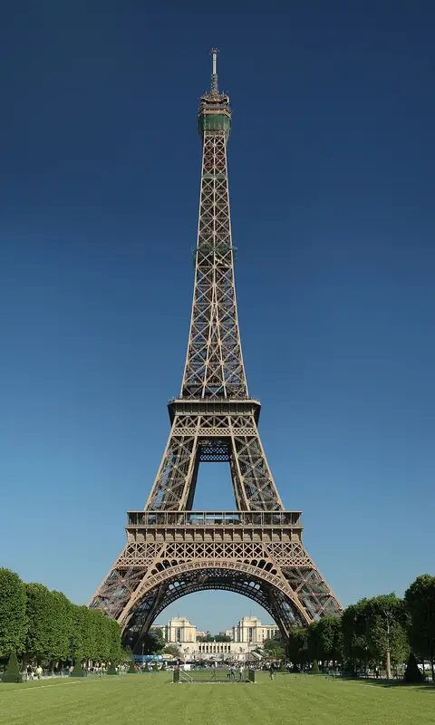
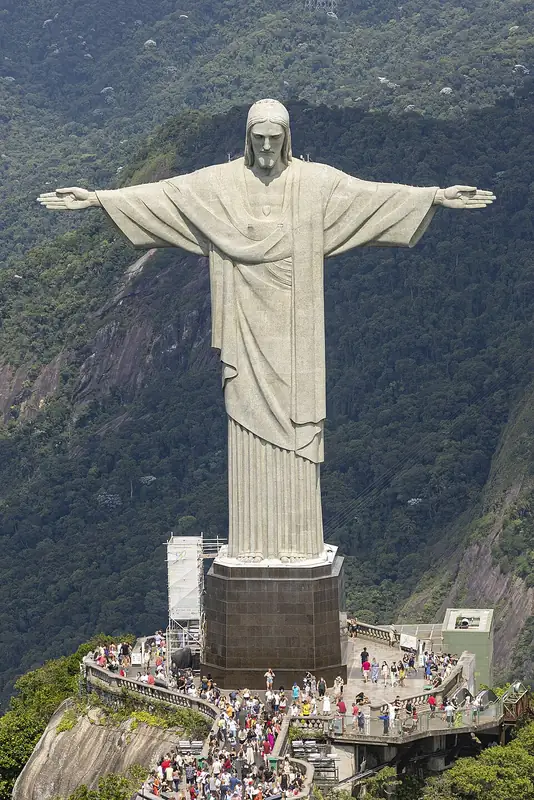
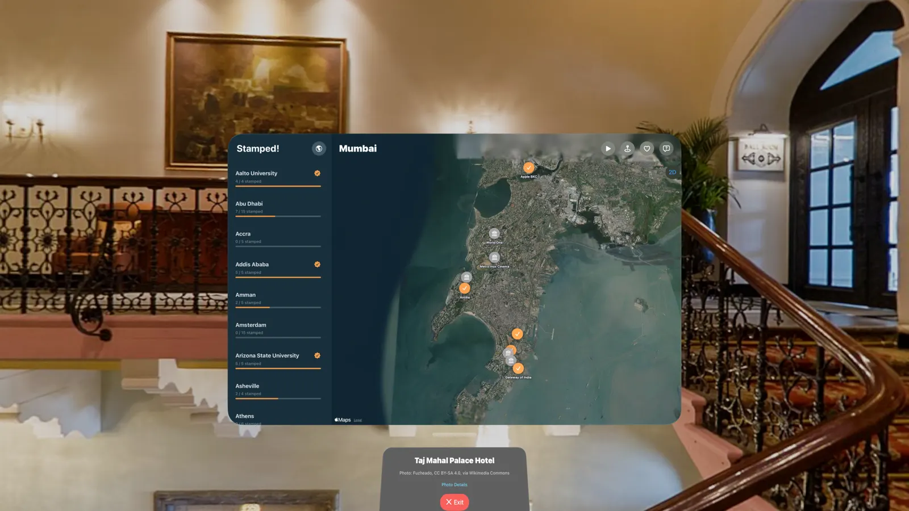
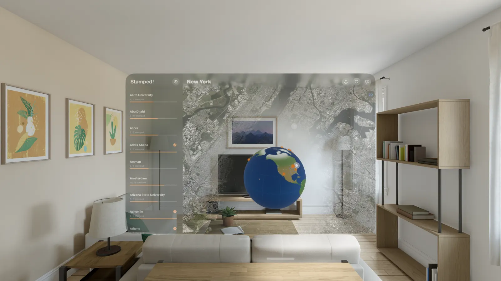
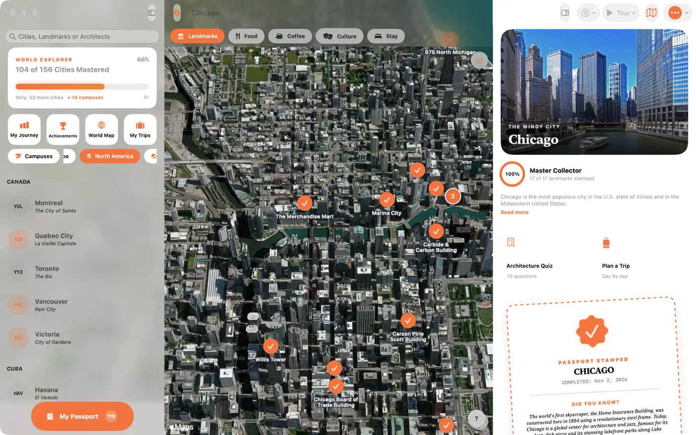

Um passaporte de cidades · Grátis para iPhone, iPad, Mac e Vision Pro
Os grandes edifícios do mundo, carimbados.
Sobreponha um mapa antigo à cidade de hoje, faça um passeio em que o mapa volta ao ano de construção de cada monumento e ganhe um carimbo em cada prédio que visitar. 2.400 monumentos em 166 cidades para explorar em 3D.
- 2.400+Pontos turísticos
- 166Cidades
- 6Continentes
- 60+Países
- 122Campi
- 9Idiomas
História · Mapas e fotos antigas
Veja a cidade como era.
Sobreponha um mapa de ruas de 1850, 1900, 1925 ou 1950 à vista de satélite de hoje. Toque em Passeio no tempo e, conforme o passeio avança, o mapa muda para o ano em que cada marco foi construído.
- Fotos antigas de arquivos públicos, todas com crédito
- Faça uma pergunta a um marco e ouça a resposta, com Apple Intelligence
- Entre no passado: filmes de domínio público e fotos antigas da cidade
- Sons das ruas durante o passeio
- Neste dia: o que aconteceu hoje nos marcos do app


Como funciona
Explore. Viaje. Carimbe.
-
Explore do sofá
Sobrevoe 166 cidades em 3D fotorrealista e leia a história por trás de cada edifício.
-
Planeje a viagem
Organize os pontos turísticos dia a dia, adicione hotéis e lugares para comer e veja a rota em 3D antes de partir.
-
Encha seu passaporte
Ganhe um carimbo em cada ponto turístico que visitar e domine uma cidade carimbando todos.
Explorar · 3D fotorrealista + Olhe ao Redor
Do céu até a rua.
Imagens de satélite sobre a altura real dos edifícios. Toque em um pino e a câmera voa direto até ele, ou inicie um tour guiado que voa entre todos os pontos turísticos por você. Depois, desça ao nível da rua e veja como é o edifício antes de chegar.
- Percorra os pontos turísticos em ordem de caminhada direto do cartão do mapa
- Filtre por não visitados, carimbados, quero visitar e estilo arquitetônico
- Atalhos para comida, café, cultura e lugares para ficar


Experimente · Apple Maps ao vivo
Toque em um ponto turístico. Carimbe.
Um mapa real da Apple com Olhe ao Redor, bem aqui no seu navegador. Escolha uma cidade, toque em um pino, olhe ao redor no nível da rua e carimbe. O app faz o mesmo em 3D fotorrealista, para mais de 2.400 pontos turísticos.
Os carimbos que você ganha aqui ficam neste navegador. No app, eles são sincronizados entre seus dispositivos com o iCloud.
Tour guiado · Gravado no app
Aperte o play e deixe voar.
O tour guiado voa sozinho de um ponto turístico a outro, com um cartão e uma prévia do Olhe ao Redor em cada parada.
Seis continentes · 166 cidades
Todos os continentes para onde você pode voar.
Não são só as capitais de sempre. O Stamped! reúne 166 cidades, de Reykjavik a Zanzibar, cada uma com seus pontos turísticos, seu quiz e seu carimbo.
Mais 10 cidades, de Porto e Cracóvia a Hiroshima e Hanói, chegam na próxima atualização.
-
Europa 28 cidades
Paris, Roma, Barcelona, Londres, Praga, Istambul, Reykjavik, Tbilisi…
-
Ásia 36 cidades
Tóquio, Quioto, Seul, Singapura, Dubai, Mumbai, Katmandu, Xi'an…
-
América do Norte 35 cidades
Nova York, Chicago, Cidade do México, Havana, Toronto, Honolulu, Detroit…
-
América do Sul 15 cidades
Rio de Janeiro, Buenos Aires, Brasília, Lima, Cartagena, Medellín…
-
África 11 cidades
Cairo, Marrakech, Cidade do Cabo, Lagos, Nairobi, Adis Abeba, Zanzibar…
-
Oceania 5 cidades
Sydney, Melbourne, Brisbane, Auckland, Queenstown
Dentro do app · Mais de 2.400 pontos turísticos
Alguns dos lugares que esperam por você.
Cada um abre o guia da cidade (em inglês), com o arquiteto, o ano de construção e a história por trás dele.
-

Torre EiffelParis Foto: Benh LIEU SONG, Public domain - O ColiseuRoma Foto: FeaturedPics, CC BY-SA 4.0
- Sagrada FamíliaBarcelona Foto: Canaan, CC BY-SA 4.0
- Grande Pirâmide de GizéCairo Foto: Douwe C. van der Zee, CC BY-SA 4.0
- Ópera de SydneySydney Foto: Bernard Spragg. NZ from Christchurch, New Zealand, CC0
-

Cristo RedentorRio de Janeiro Foto: Arne Müseler, CC BY-SA 3.0 de - Empire State BuildingNova York Foto: Sam Valadi, Public domain
- Kinkaku-jiQuioto Foto: Nacaru, CC BY-SA 4.0
- Santa SofiaIstambul Foto: Adli Wahid, CC BY-SA 3.0
- Torres PetronasKuala Lumpur Foto: James Kerwin from Tbilisi, CC BY 2.0
- Casa da CascataPittsburgh Foto: lachrimae72, CC0
- HallgrímskirkjaReykjavik Foto: Steinninn, CC BY 4.0
.jpg){kind=link}


.jpg){kind=link}

.jpg){kind=link}

.jpeg){kind=link}
_(cropped)_2.jpg){kind=link}


Descubra · As pessoas por trás dos edifícios
Conheça os arquitetos.
Cada ponto turístico traz seu arquiteto, estilo, data de construção, altura e história. Toque em um arquiteto para ver todos os edifícios dele no app. O Stamped! acompanha de quem são os edifícios que você já viu e mostra seu arquiteto favorito.
- Frank Lloyd Wright34
- Oscar Niemeyer16
- Frank Gehry15
- I. M. Pei17
- Zaha Hadid15
- Herzog & de Meuron13
- Mies van der Rohe8
- Renzo Piano7
- Jean Nouvel7
- Santiago Calatrava11
- Le Corbusier13
- Antoni Gaudí3
- Adrian Smith3

Jogue · Quiz de arquitetura
Teste seus conhecimentos.
Cada cidade e cada campus tem seu próprio quiz de 10 perguntas, feito com seus pontos turísticos reais: o estilo, o ano, o arquiteto, o número de andares. São 273 quizzes no total, em 9 idiomas. Toque na resposta ou diga em voz alta.
Quantos andares tem o Flatiron Building?
Experimente. Três perguntas.

Planeje · Viagens
Planeje a viagem, dia a dia.
Monte uma viagem de vários dias com pontos turísticos e seus próprios lugares salvos, e sobrevoe tudo no mapa 3D antes de sair.
- Reordene as paradas, veja os tempos de caminhada e otimize a rota com um toque
- Adicione qualquer restaurante, loja ou local do Apple Maps
- Encontre hotéis para cada noite com uma busca para as suas datas
- As viagens são sincronizadas pelo iCloud entre iPhone, iPad e Mac

Em cada cidade
Tudo o que você precisa quando chegar.
Cada página de cidade responde ao “e agora?”, então você não precisa de outros cinco apps.
-
Hotéis
Hotéis perto de cada ponto turístico, com fotos da rua, e uma busca de hotéis para as datas da sua viagem.
-
Onde comer
Restaurantes perto de cada ponto turístico com tempos de caminhada, tours gastronômicos e cafés no mapa.
-
Eventos
Shows, espetáculos e jogos com até seis meses de antecedência, além da agenda de bibliotecas e museus em algumas cidades.
-
Clima
A previsão do tempo da cidade que você está explorando.
-
Moeda
Um conversor rápido para a moeda local.
-
Aeroporto
O aeroporto principal, seu código e o que o torna interessante.
-
Diga olá
Como cumprimentar as pessoas no idioma local.
-
Quero visitar
Toque no coração de qualquer ponto turístico ou lugar do Apple Maps para salvá-lo para depois.
Apple Vision Pro · Espacial
Entre no ponto turístico.
No Apple Vision Pro, cada cidade flutua na sua sala em um mapa 3D fotorrealista, e os carimbos que você ganha no iPhone vão com você.
- Um globo 3D com todas as cidades e pinos ao vivo dos lugares que você carimbou
- Panoramas de 360°: entre em 26 pontos turísticos
- Play Tour: um voo narrado de ponto turístico em ponto turístico
- Detroit em 3D completo, baixada apenas quando você quiser
- Explorar juntos com o SharePlay, para que seus amigos em uma chamada do FaceTime sobrevoem uma cidade com você


Mac · A tela grande
Planeje tudo no seu Mac.
O mesmo passaporte em uma tela maior: suas cidades na barra lateral, o mapa 3D no meio e a página da cidade ao lado. Planeje no Mac e retome a viagem no iPhone com o iCloud.
- Mapa-múndi, Minha jornada, Conquistas, Minha lista de universidades, viagens e o quiz abrem cada um em sua própria janela
- Arraste pontos turísticos para uma viagem, efeitos ao passar o ponteiro e atalhos de teclado

Para visitas a universidades · Novidade na 2.7
Planejando visitas a universidades? Deixe o Stamped! traçar o mapa.
Salve as universidades que sua família está avaliando e o Stamped! as organiza em uma viagem de carro: um campus por dia, em uma ordem de trajeto curta. Todas as universidades da Big Ten, SEC, ACC e Big 12, a Ivy League e grandes campi, de Oxford a Melbourne.
- Faça um tour 3D por cada campus antes de ir de carro
- Veja os edifícios marcantes e as histórias por trás deles
- Marque as tradições que os estudantes realmente fazem, como esfregar a estátua da sorte
- Leia a história de cada universidade, veja os próximos jogos em casa e explore os eventos do campus
- Grátis para iPhone, iPad e Mac, com viagens sincronizadas pelo iCloud
- Big Ten
- SEC
- ACC
- Big 12
- Ivy League
- + pelo mundo


Colecione · Seu passaporte
Colecione todos.
Ganhe um carimbo por cada ponto turístico que visitar e veja seu passaporte se encher, cidade por cidade e país por país. Domine uma cidade quando tiver carimbado todos os pontos turísticos dela.
- Conquistas por primeiros carimbos, corujas noturnas, viajantes de fim de semana e mais
- Um mapa-múndi de todos os lugares por onde você passou
- Carimbos de campus nas cores de cada universidade
- Compartilhe seu passaporte e veja-o na Tela de Início com o widget

E os pequenos detalhes.
-
Sincronização com o iCloud
Carimbos, viagens e listas acompanham você entre os dispositivos.
-
9 idiomas
Inglês, alemão, espanhol, francês, italiano, japonês, coreano, português e chinês.
-
Feito para todos
VoiceOver, Dynamic Type e Reduzir Movimento, além de alto contraste e modo escuro.
-
Salvar para uso offline
Mantenha as fotos e as histórias de uma cidade no seu dispositivo para voos e viagens ao exterior.
-
Ouvir
A história de qualquer ponto turístico, lida em voz alta enquanto você está diante dele.
-
Compartilhe um carimbo
Envie o carimbo de uma cidade ou de um campus para seus amigos como um cartão com imagem.
-
Siri e Atalhos
Diga “Abrir Paris no Stamped!” ou adicione o Stamped! a um atalho.
-
Tours e ingressos
Encontre tours e ingressos para qualquer ponto turístico da cidade com o GetYourGuide.
-
Fotos históricas
Fotos e desenhos antigos de pontos turísticos dos EUA, da Biblioteca do Congresso.
Seu passaporte está esperando.
Mais de 2.400 pontos turísticos. Um carimbo em cada. Grátis para iPhone, iPad, Mac e Apple Vision Pro.
Confira seu e-mail.
Toque no link do nosso e-mail para confirmar e você estará na lista.
Se a nova aba pedir para provar que você é humano, faça isso primeiro.
Curtindo o Stamped!? Deixe uma gorjeta para ajudar a trazer novas cidades.